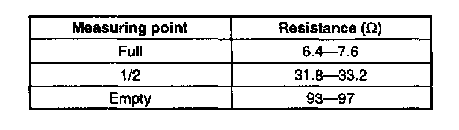
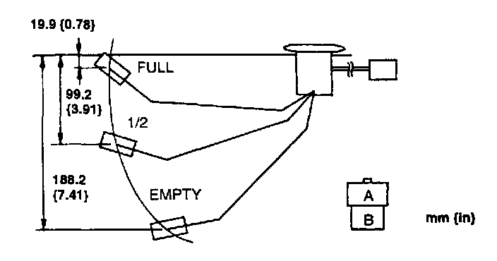

Fuel Gauge Sender: Testing and Inspection
FUEL GAUGE SENDER UNIT INSPECTION1. Remove the fuel pump.


2. Using an ohmmeter, measure and verify the resistance between the fuel gauge sender unit terminals as shown in the following chart while slowly moving the unit arm from empty to full.
3. If not as specified, replace the fuel gauge sender unit.